.PNG)
The design of the model.
1. Defining parameters
We started by making all the parameters we needed.
The parameters are as defined:
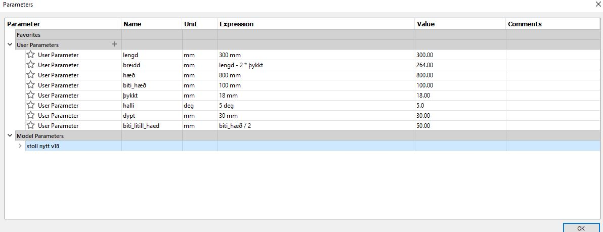2. Drawing the first part
We started the actual design by drawing a sketch of the side panel using the parameters we defined.
The sketch:
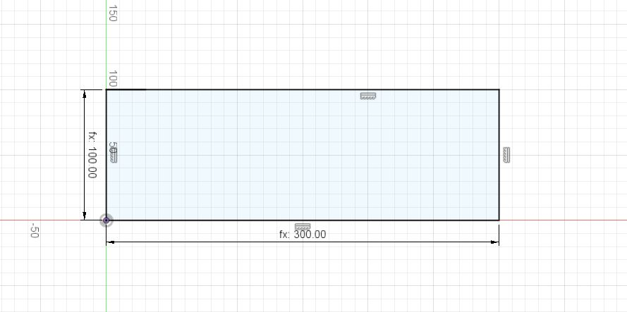3. Extruding the first part and making a slot.
The sketch made previously was then extruded with the "Þykkt" parameter and a slot was drawn onto the face of the object.
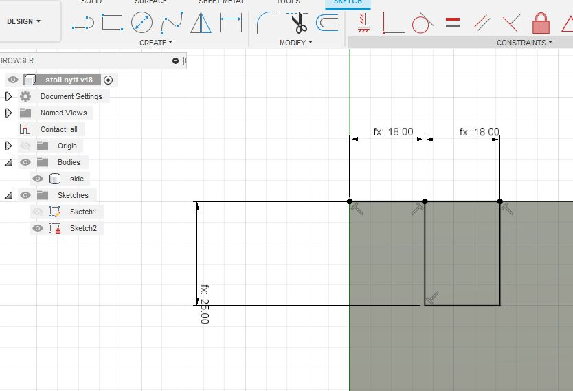We then used a box pattern to repeate the extrusion of the slot on the other side of the panel.
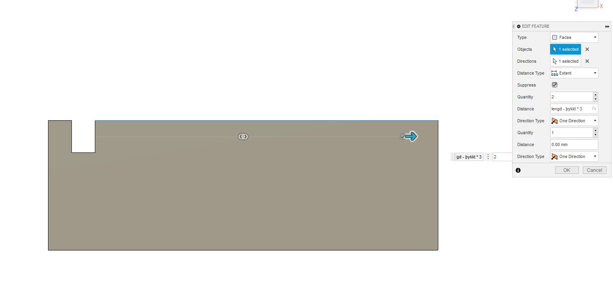4. Making a slanted slot.
We drew a sketch of a slanted slot, with a slant of "halli" degrees onto the face of the panel. This is the slot that the feet of the stool will slide into.
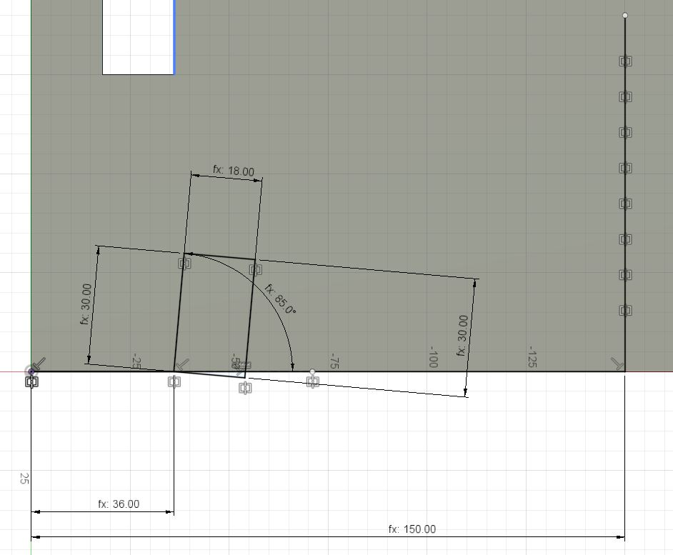We then used the mirror tool to duplicate the drawing on the other side of the panel and extruded the cuts.
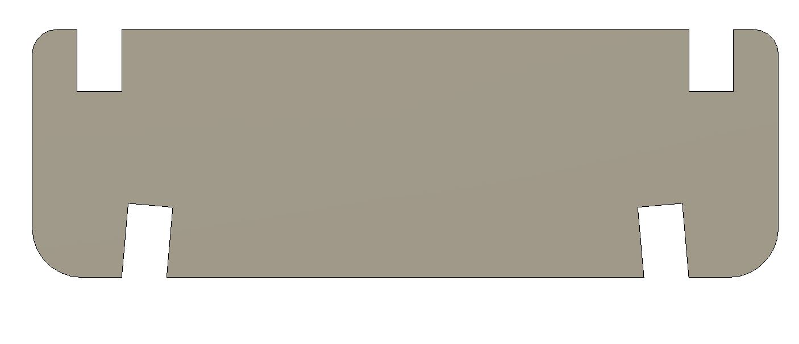5. Adding more slots.
Using the same process as before we made a sketch of another slot with the depth "dypt" and used the box pattern to repeat the extrusion along the panel.
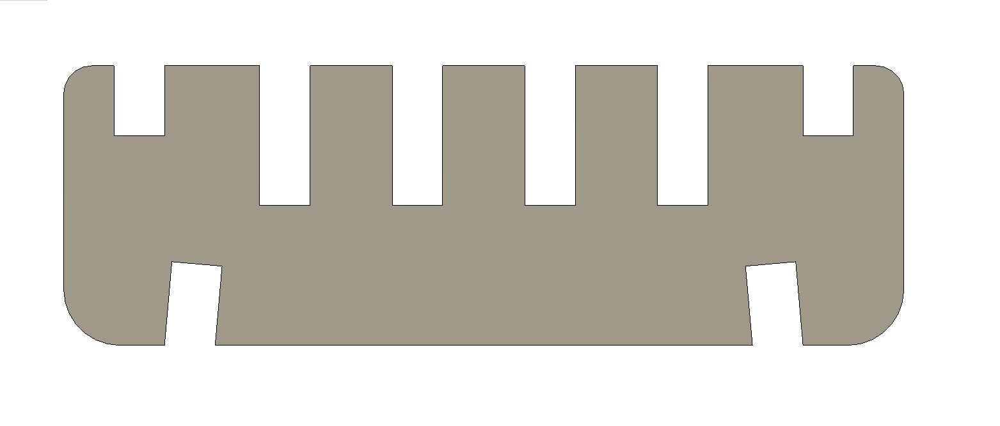6. Making another panel.
We then drew a sketch of another panel that is slotted into the previous one. This one is again sketched using the parameters and after the extrusion of the base panel a slot is made that is repeated along the edge.
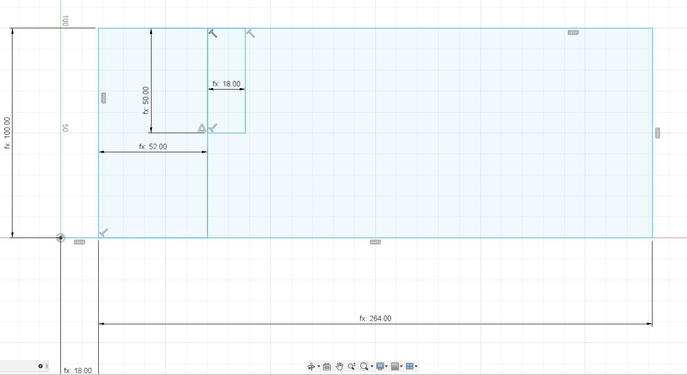After we extruded the panel we used the fillet tool on the corners and the box pattern to repeat the slots.
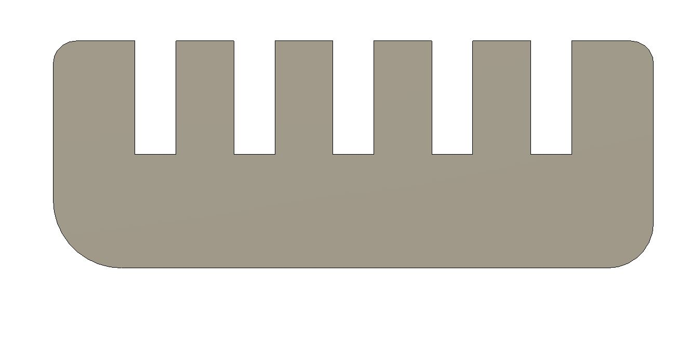7. Making the small panel.
We drew a simple sketch of the smallest panel using the parameters.
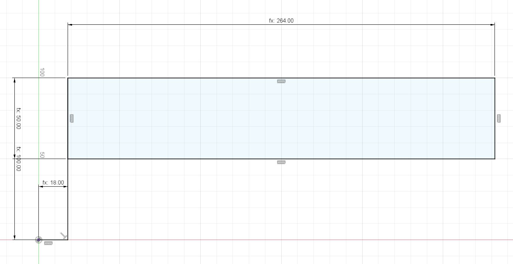We then extruded the sketch, made slots using the same method as before and used the fillet tool on the corners.
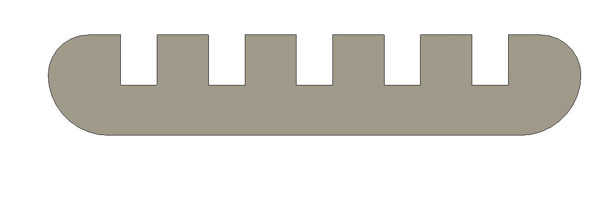8. Making the legs of the stool.
We started by drawing a sketch of the feet of the stool and defined various lengths by the parameters.
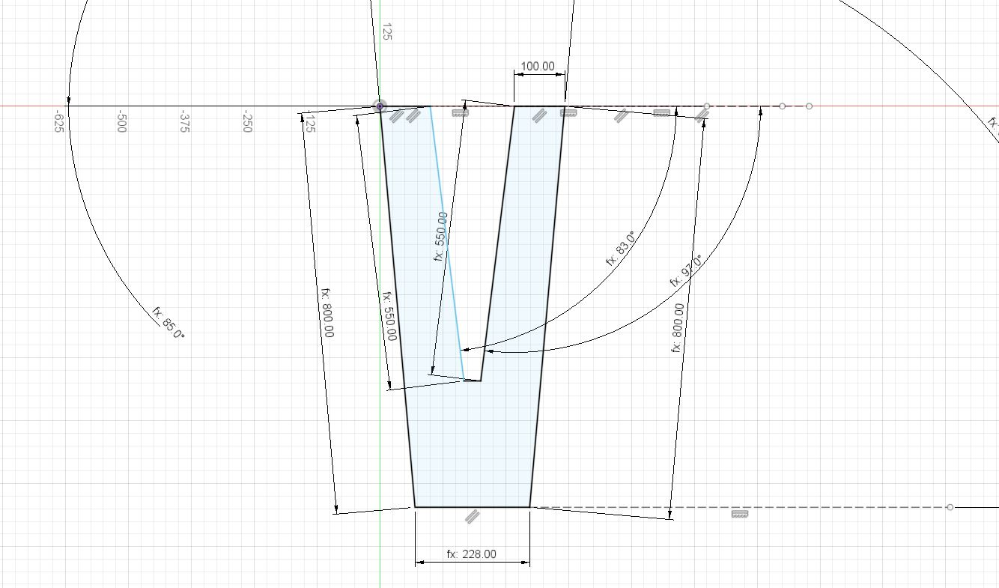We then drew a hole, after extruding the sketch, that can be slotted using a panel. To draw the hole on the other side of the leg we mirrored the sketch over the center line of the chair.
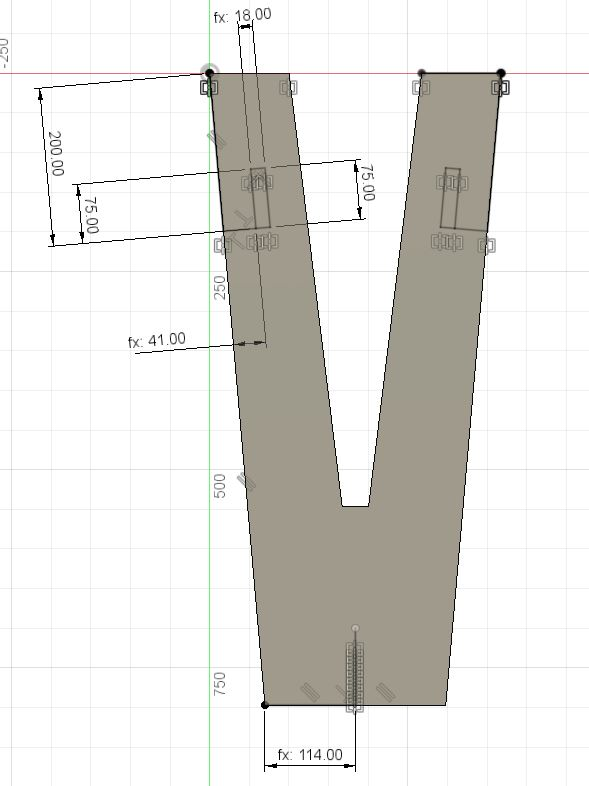We then drew a sketch of the top slots that the top part of the stool slides into.
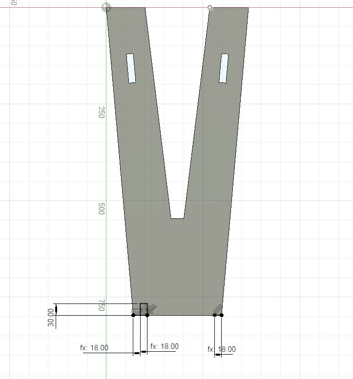Using the box pattern feature we then reapeted the extrusions along the top of the leg.
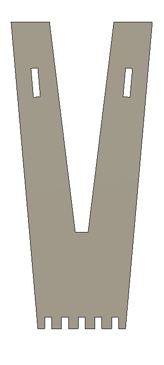9. Making the "fixer" that slots between the legs of the stool.
The sketch of the fixer turned out to be quite complicated. The reason being that in order to correctly estimate the length of the fixer, some trigonometry had to be used in the calculations. After the correct length was found, two slanting slots were directly drawn into the sketch and the fillet tool used on the corners.
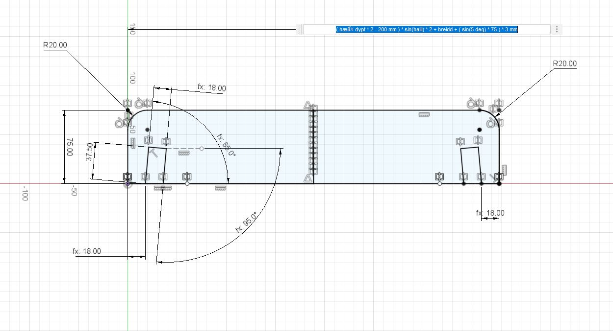The fixer was then extruded.
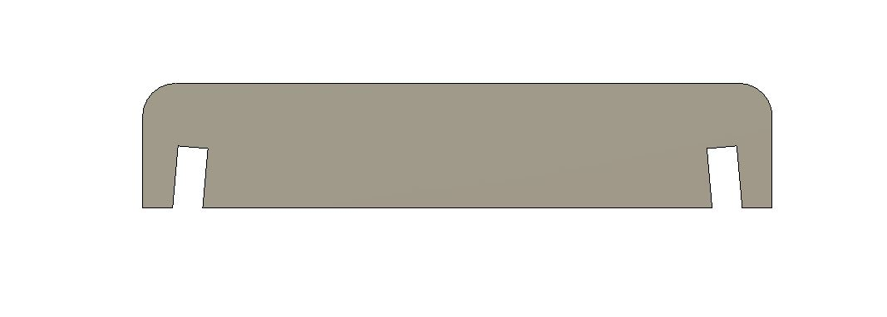10. Assembly.
Once all the parts had been drawn, multiple copies of them were made and turned into components. The components were then assembled using the "joints" feature.
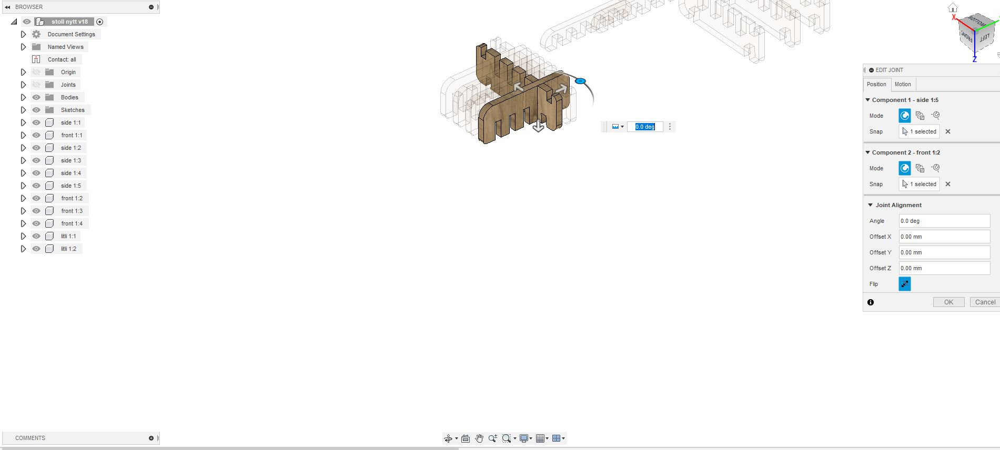The final 3D model of the stool is here:
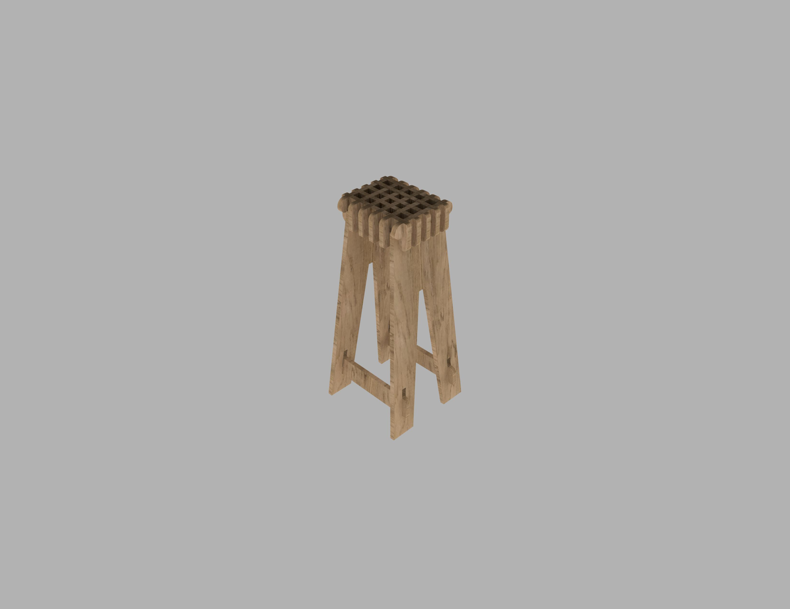11. Creating the layout.
After the parts were done and checked for the fit, we took all the components and layed them down. We then projected the faces of the parts onto a new sketch and exported that sketch as a DXF file.
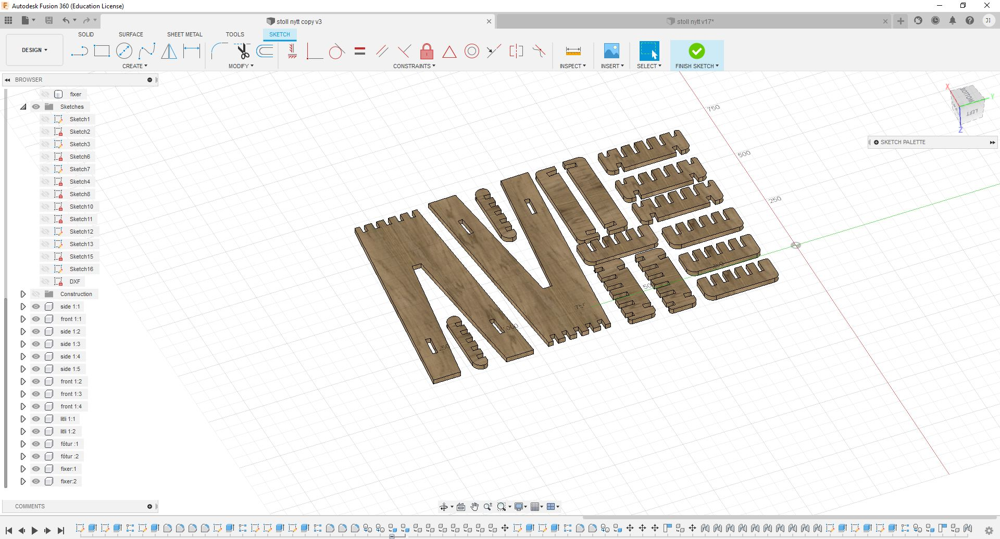
The Fusion 360 file, DXF file and VCarve files can be found here. Github link to model.
Preparing the parts for CNC milling.
Another member of the group, Ísak Ernir, prepared the files for milling in CNC using the VCarve software. A link explaining the procedure can be found here.
CNC milling and assembly of the stool
The assembly and CNC milling of the stool can be found on our joint group website: here.